2025-09-30
Scan to view the slides
numpy.ndarray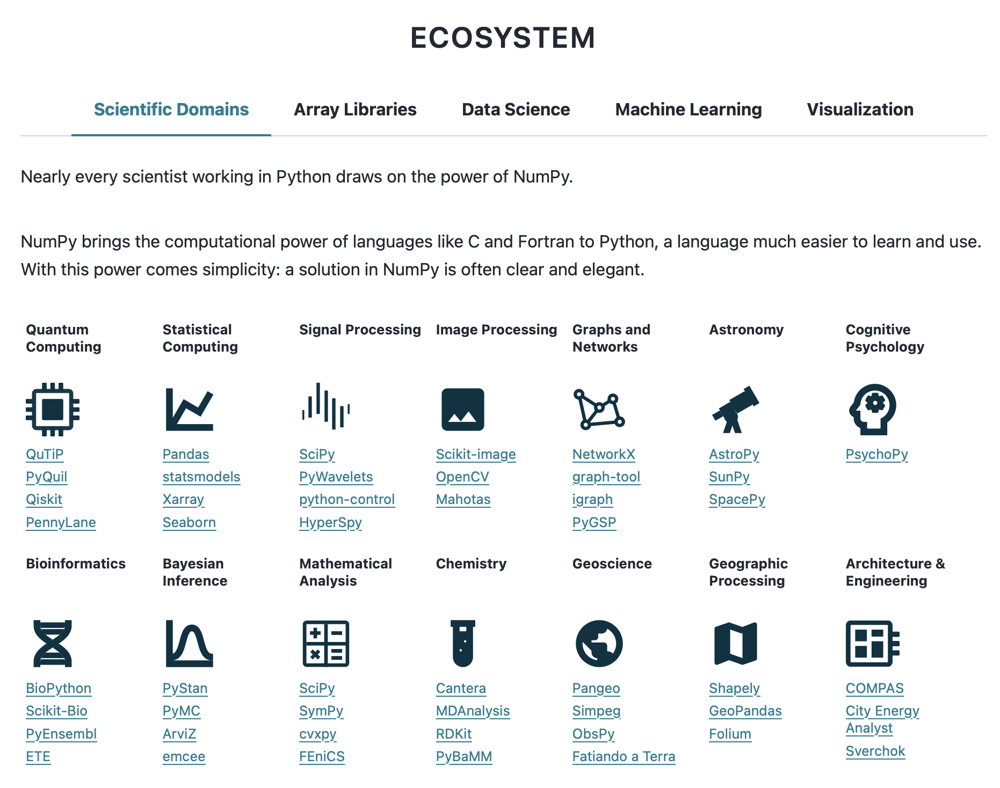
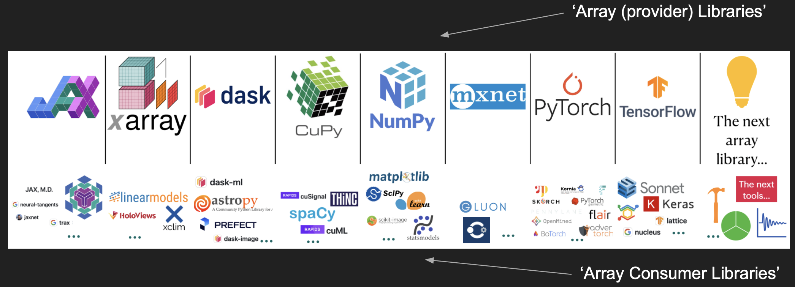
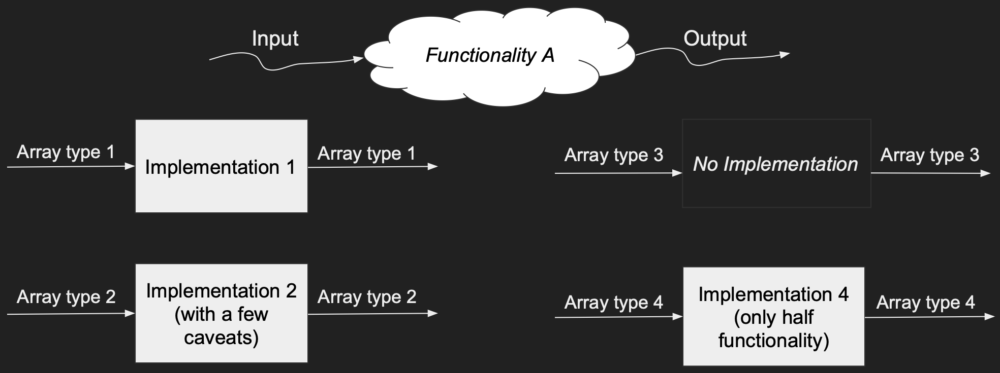
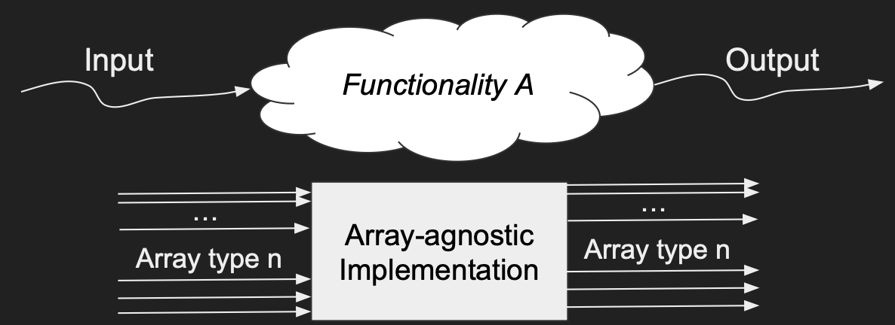
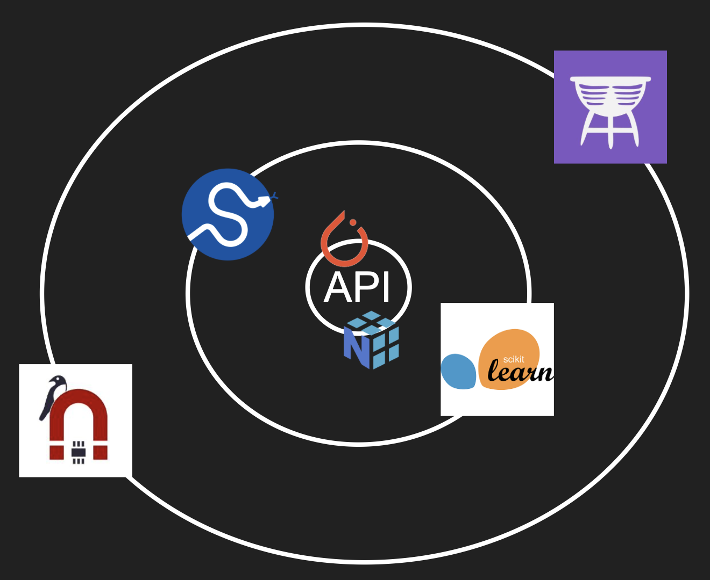
Libraries under the consortium umbrella:
array-apiarray-api-testsarray-api-compatarray-api-strictarray-api-extraarray-api-typingarray-api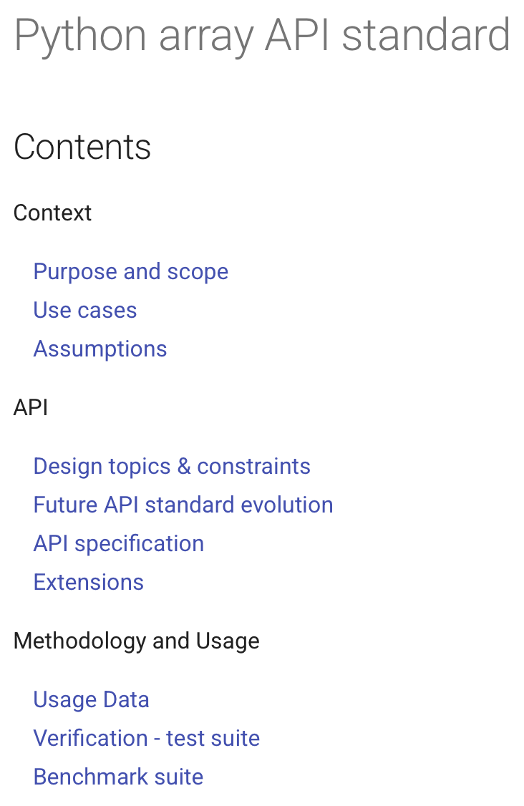
array-api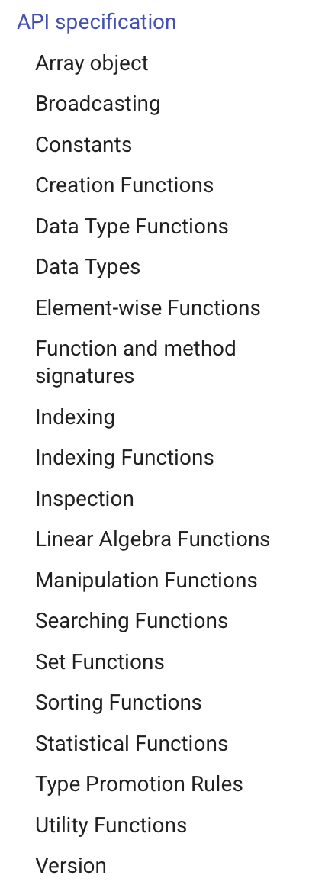
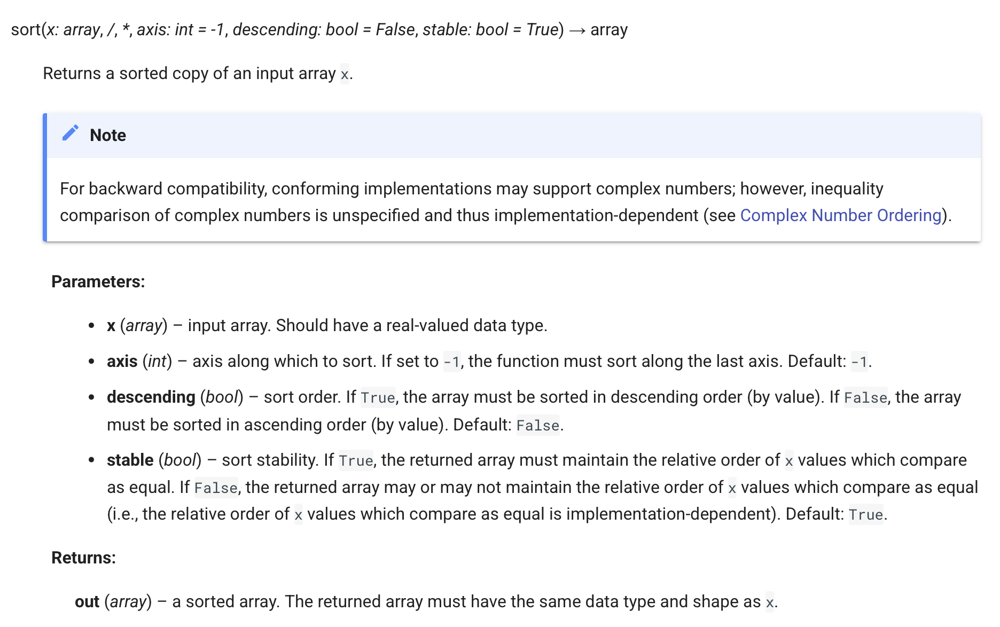
array-apiarray-api-testshypothesis (hear more in the SciPy 2023 talk)array-api-compat (1/2)array_api_compat.numpyarray-api-compat (2/2)array_namespace# scipy.cluster.vq.whiten
def whiten(obs, check_finite=None):
xp = array_namespace(obs)
if check_finite is None:
check_finite = not is_lazy_array(obs)
obs = _asarray(obs, check_finite=check_finite, xp=xp)
std_dev = xp.std(obs, axis=0)
zero_std_mask = std_dev == 0
std_dev = xpx.at(std_dev, zero_std_mask).set(1.0)
if check_finite and xp.any(zero_std_mask):
{snip}
return obs / std_devarray-api-strict (1/2)array-api-strict (2/2)# scipy/cluster/tests/test_hierarchy.py
def test_linkage_cophenet_tdist_Z(self, xp):
# Tests cophenet(Z) on tdist data set.
expectedM = xp.asarray([268, 295, 255, 255, 295, 295, 268, 268, 295, 295,
295, 138, 219, 295, 295])
Z = xp.asarray(hierarchy_test_data.linkage_ytdist_single)
M = cophenet(Z)
xp_assert_close(M, xp.asarray(expectedM, dtype=xp.float64), atol=1e-10)xp
pytest to include array_api_strictxp when it is installedarray-api-extra (1/3)xpx in codearray-api-extra (1/3)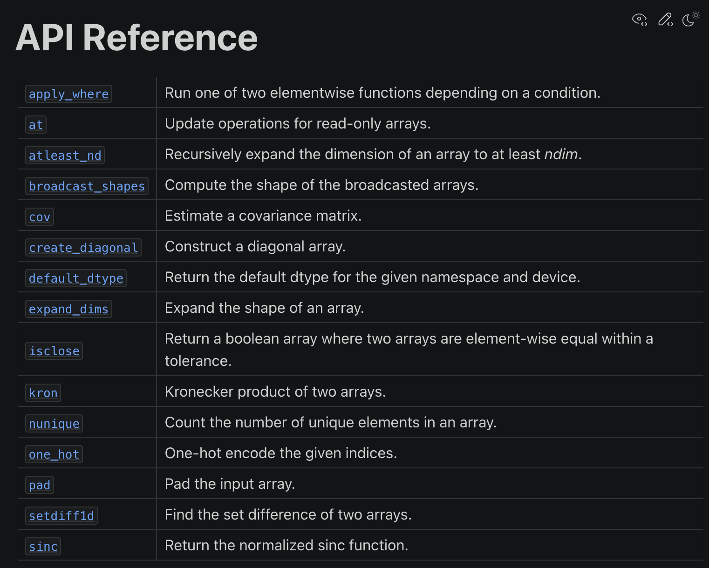
array-api-extra (2/3)xpx.at — index update functionality for libraries lacking in-place modificationsarray-api-extra (2/3)xpx.at — index update functionality for libraries lacking in-place modificationsarray-api-extra (3/3)xpx.testingxp pytest fixture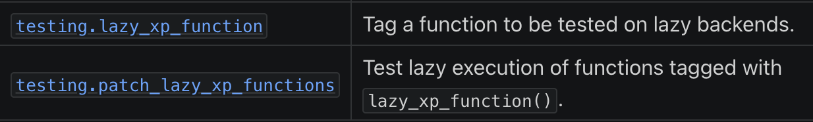
array-api-typingnumpy, cupy, jax.numpy:torch: ~full compatibility via array-api-compatdask.array: decent support via array-api-compatndonnx, cubed-dev/cubed, pydata/sparse, Blosc/python-blosc2paddle, mlxscipy (1/3)SCIPY_ARRAY_API=1array-api-compat and array-api-extraarray-api-strict, cupy, torch, jax.numpy, dask.arrayfloat32 PyTorch job
scipy (2/3)SciPy array API standard support documentation
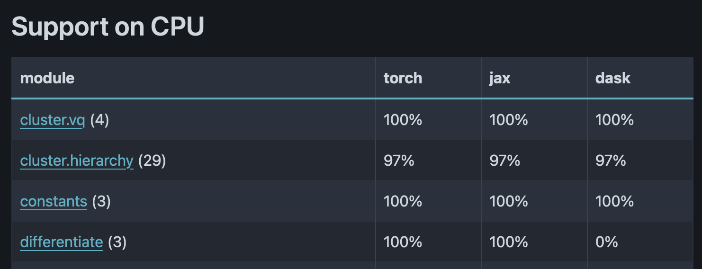
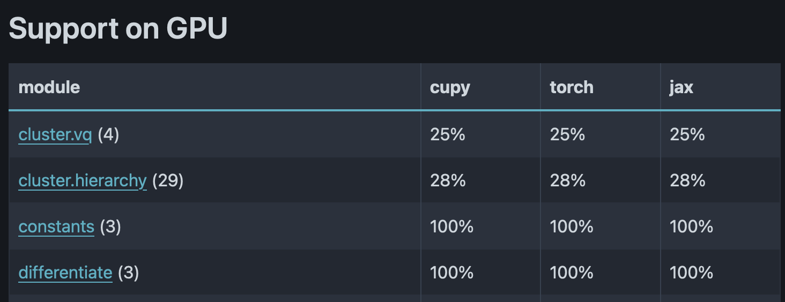
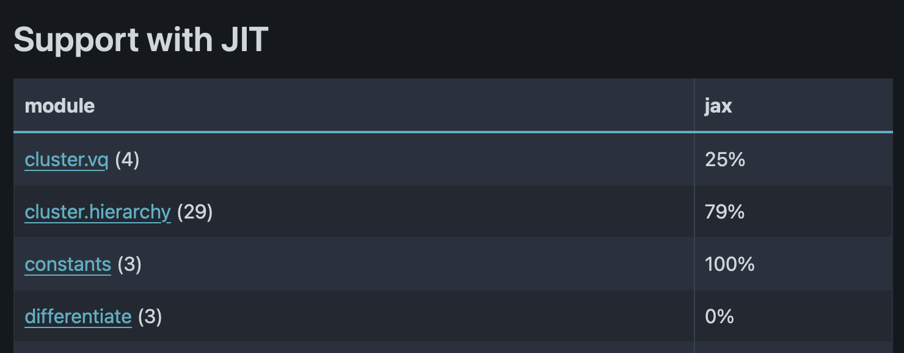
scipy (3/3)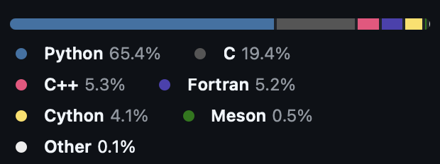
scipy (3/3)Approaches for compiled code:
if-else to existing implementations)scipy.spatial.transform)
scipy1 (3/3)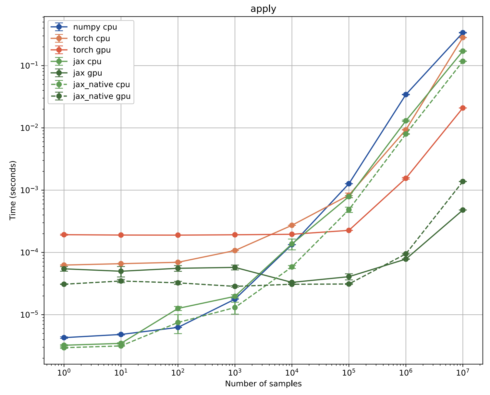
scikit-learn1 (1/3)SCIPY_ARRAY_API env var)array-api-compat and array-api-extraarray-api-strict, cupy, and torchfloat32 and float64 dtypesscikit-learn1 (2/3)scikit-learn (3/3)glass-dev/GLASSmagpylibicaros-usc/pyribsEleutherAI/polyapproxNeilGirdhar/efaxmdhaber/marray
numpy.ma)quantity-dev/quantity-array
scipy & scikit-learnarray-api-extraarray-api-typing developmentscikit-learn or array-api-extra!A Hitchhiker’s Guide to the Array API Standard Ecosystem - https://lucascolley.github.io/talks